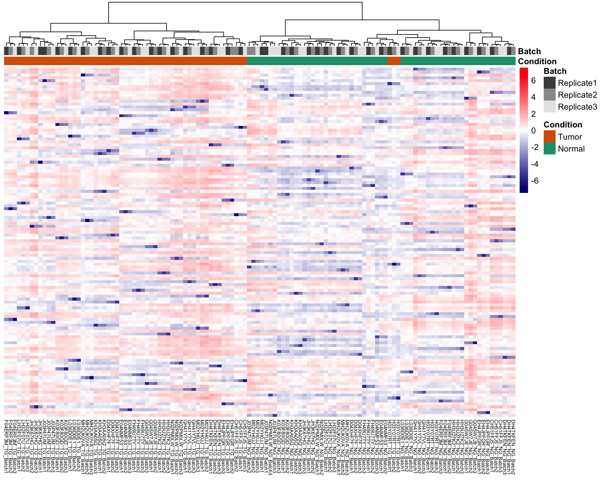

Preprocessing: Annotated Untargeted Lipidomics of Method Dev and Discovery cohorts
Qian-Wu Liao
Last updated: 2024-07-30
Checks: 6 1
Knit directory: SMART-CARE_LungCancer/
This reproducible R Markdown analysis was created with workflowr (version 1.7.1). The Checks tab describes the reproducibility checks that were applied when the results were created. The Past versions tab lists the development history.
Great! Since the R Markdown file has been committed to the Git repository, you know the exact version of the code that produced these results.
Great job! The global environment was empty. Objects defined in the global environment can affect the analysis in your R Markdown file in unknown ways. For reproduciblity it’s best to always run the code in an empty environment.
The command set.seed(20230425) was run prior to running
the code in the R Markdown file. Setting a seed ensures that any results
that rely on randomness, e.g. subsampling or permutations, are
reproducible.
Great job! Recording the operating system, R version, and package versions is critical for reproducibility.
Nice! There were no cached chunks for this analysis, so you can be confident that you successfully produced the results during this run.
Using absolute paths to the files within your workflowr project makes it difficult for you and others to run your code on a different machine. Change the absolute path(s) below to the suggested relative path(s) to make your code more reproducible.
| absolute | relative |
|---|---|
| /Users/qianwu/Desktop/SMART-CARE_LungCancer | . |
Great! You are using Git for version control. Tracking code development and connecting the code version to the results is critical for reproducibility.
The results in this page were generated with repository version 282daae. See the Past versions tab to see a history of the changes made to the R Markdown and HTML files.
Note that you need to be careful to ensure that all relevant files for
the analysis have been committed to Git prior to generating the results
(you can use wflow_publish or
wflow_git_commit). workflowr only checks the R Markdown
file, but you know if there are other scripts or data files that it
depends on. Below is the status of the Git repository when the results
were generated:
Ignored files:
Ignored: .DS_Store
Ignored: .RData
Ignored: .Rhistory
Ignored: analysis/.DS_Store
Ignored: code/.DS_Store
Ignored: data/.DS_Store
Ignored: data/Discovery/
Ignored: data/MethodDev/
Ignored: data/aliquot_metadata.xlsx
Ignored: data/metadata_latest/
Ignored: data/patient_metadata.xlsx
Ignored: data/sample_metadata.xlsx
Ignored: output/.DS_Store
Ignored: output/Discovery/
Ignored: output/MethodDev/
Ignored: output/SC_meeting/
Untracked files:
Untracked: analysis/CrossCohort_investigation_EXP.Rmd
Untracked: code/archive/
Untracked: code/data_availability.Rmd
Untracked: code/dataset_list.R
Untracked: code/workflowr_commands.R
Unstaged changes:
Modified: analysis/FeatSelection_ML.Rmd
Modified: analysis/MDev_Dis_02_soa_annotated_untargeted.Rmd
Note that any generated files, e.g. HTML, png, CSS, etc., are not included in this status report because it is ok for generated content to have uncommitted changes.
These are the previous versions of the repository in which changes were
made to the R Markdown
(analysis/MDev_Dis_01_preprocessing_annotated_untargeted.Rmd)
and HTML
(docs/MDev_Dis_01_preprocessing_annotated_untargeted.html)
files. If you’ve configured a remote Git repository (see
?wflow_git_remote), click on the hyperlinks in the table
below to view the files as they were in that past version.
| File | Version | Author | Date | Message |
|---|---|---|---|---|
| Rmd | 7fd2bc4 | LiaoQianWu | 2024-07-16 | Generate combined annotated untargeted data where potential bad-quality samples are removed for recurrence prediction task |
| Rmd | 3e8927d | LiaoQianWu | 2024-07-15 | Directly combine preprocessed Method Dev and Discovery annotated tissue untargeted lipidomics |
| Rmd | fffa3cd | LiaoQianWu | 2024-07-08 | Preprocess partially annotated untargeted lipidomics and merge two cohort datasets |
Description: Preprocess and merge Annotated Tissue Untargeted Lipidomics of Method Development and Discovery cohorts provided by Dr. Qiuqin Zhou from AG Hopf, including data cleansing, filtering (by RT, m/z, missing values, etc.), normalization (VSN), and batch correction if needed. All needed information was then stored in SummarizedExperiment objects for further analyses.
For prediction of tumor recurrence, combined data with samples PDIR55_NG, I0HVOL_TU, 7EAOX7_TU, 1NL5BV_TU, and 125CII_TU removed due to misclassification in metadata-assisted quality control (Tumor vs Normal, PC1) and low tumor purity is prepared.
Load libraries
library(readr)
library(readxl)
library(vsn)
library(limma)
library(sva)
library(visdat)
library(ggrepel)
library(ggvenn)
library(SummarizedExperiment)
library(tidyverse)
# Load user-defined functions
source('./code/analysis_pipeline.R')
source('./code/misc.R')
source('./code/comparison_funcs.R')
# Set plot theme
th <- theme_bw(base_size = 15) +
theme(axis.title = element_text(face = 'bold'),
axis.text = element_text(face = 'bold'),
axis.ticks = element_line(linewidth = 0.8),
legend.text = element_text(size = 15))
th4MissViz <- theme(axis.text.x = element_text(angle = 90, vjust = 0.5, hjust = 0,
size = 11, face = 'bold'),
axis.text.y = element_blank(),
axis.title.y = element_text(size = 13, face = 'bold'),
legend.text = element_text(size = 12, face = 'bold'))# Load sample metadata
smpMetadat <- readxl::read_excel('./data/metadata_latest/sample_metadata.xlsx')
colnames(smpMetadat) <- smpMetadat[3,, drop = F]
smpMetadat <- dplyr::slice(smpMetadat, -c(1:3)) %>%
dplyr::select(c(Code, Parents, Visit, `Material submitted`, `Date and time of collection or surgery`,
`SMART-CARE cohort identifier`)) %>%
dplyr::rename(Sample = Code, Patient = Parents, TimePoint = Visit, SmpType = `Material submitted`,
Date = `Date and time of collection or surgery`, Cohort = `SMART-CARE cohort identifier`) %>%
dplyr::mutate(Sample = stringr::str_remove_all(Sample, '^SC_T_S_|^SC_DIS_S_|^SC_VAL_S_|^SC_S_|_P'),
Patient = stringr::str_remove(Patient, '^/THRX_SPACE/THRX_DB/'),
TimePoint = dplyr::case_when(TimePoint == 'PRETHERAPEUTIC' ~ 'Baseline',
TimePoint == 'FOLLOW-UP' ~ 'Follow-up',
TimePoint == 'RECURRENCE' ~ 'Recurrence'),
SmpType = dplyr::case_when(SmpType == 'EDTA_PLASMA' ~ 'Plasma',
SmpType == 'FRESH_FROZEN_TISSUE' ~ 'Tissue'),
Condition = dplyr::case_when(grepl('_TU|_TG', Sample) ~ 'Tumor',
grepl('_NG', Sample) ~ 'Normal',
!grepl('_TU|_TG|_NG', Sample) ~ TimePoint),
TimePoint = dplyr::case_when(TimePoint %in% 'Recurrence' ~ 'Follow-up',
!TimePoint %in% 'Recurrence' ~ TimePoint),
Date = stringr::str_extract(Date, '^\\d+-\\d+-\\d+'),
Cohort = dplyr::case_when(Cohort == 'DISCOVERY_COHORT' ~ 'Discovery',
Cohort == 'METHOD_DEVELOPMENT_COHORT' ~ 'MethodDev',
Cohort == 'VALIDATION_COHORT' ~ 'Validation'),
Date = as.Date(Date, format = '%Y-%m-%d'))
# Load patient metadata
patientMetadat <- readxl::read_excel('./data/metadata_latest/patient_metadata.xlsx')
colnames(patientMetadat) <- patientMetadat[3,, drop = F]
patientMetadat <- dplyr::slice(patientMetadat, -c(1:3)) %>%
dplyr::select(c(Code, Gender, `Age at diagnosis`, `Pathological stage`, `Smoking status`,
`Adjuvant chemotherapy`, Nutrition)) %>%
dplyr::rename(Patient = Code, Age = `Age at diagnosis`, Stage = `Pathological stage`,
Smoking = `Smoking status`, Adjuvant = `Adjuvant chemotherapy`) %>%
dplyr::mutate(Gender = dplyr::case_when(Gender == 'MALE' ~ 'Male',
Gender == 'FEMALE' ~ 'Female'),
Smoking = dplyr::case_when(Smoking == 'SMOKER' ~ 'Smoker',
Smoking == 'EX-SMOKER' ~ 'Ex-smoker',
Smoking == 'NON-SMOKER' ~ 'Non-smoker'),
Adjuvant = dplyr::case_when(Adjuvant == 'true' ~ 'True',
Adjuvant == 'false' ~ 'False'),
Age = as.numeric(Age),
Nutrition = dplyr::case_when(Nutrition == 'WHOLE_FOOD' ~ 'Whole_food'))
# Include patient recurrence information in patient metadata
recurPats <- dplyr::filter(smpMetadat, Condition == 'Recurrence') %>%
dplyr::pull(Patient)
patientMetadat <- dplyr::mutate(patientMetadat, Recurrence = dplyr::case_when(Patient %in% recurPats ~ 'Yes',
!Patient %in% recurPats ~ 'No'))
# Load aliquot metadata
aliquotMetadat <- readxl::read_excel('./data/metadata_latest/aliquot_metadata.xlsx')
colnames(aliquotMetadat) <- aliquotMetadat[3,, drop = F]
aliquotMetadat <- dplyr::slice(aliquotMetadat, -c(1:3)) %>%
dplyr::select(Code, Parents, `Tumor Cell Content (%)`, `Cohort Identifier`, `Submission to`,
`Delivered?`) %>%
dplyr::rename(Aliquot = Code, Sample = Parents, TumorPurity = `Tumor Cell Content (%)`,
Cohort = `Cohort Identifier`, To = `Submission to`, Delivered = `Delivered?`) %>%
dplyr::mutate(Sample = stringr::str_remove_all(Sample, '^/THRX_SPACE/THRX_DB/SC_T_S_|_P'),
Sample = stringr::str_remove(Sample, '^/THRX_SPACE/THRX_DB/SC_DIS_S_'),
Sample = stringr::str_remove(Sample, '^/THRX_SPACE/THRX_DB/SC_S_'),
Sample = stringr::str_remove(Sample, '^/THRX_SPACE/THRX_DB/SC_DIS_'),
Sample = stringr::str_remove(Sample, '^/THRX_SPACE/THRX_DB/SC_VAL_S_'),
Sample = stringr::str_remove(Sample, '^/THRX_SPACE/THRX_DB/SC_VAL_'),
Cohort = dplyr::case_when(Cohort == 'method establishment' ~ 'MethodDev',
Cohort == 'DISCOVERY_COHORT' ~ 'Discovery',
Cohort == 'VALIDATION_COHORT' ~ 'Validation'),
TumorPurity = as.numeric(TumorPurity),
TumorPurity = dplyr::case_when(grepl('_TU|_TG', Sample) ~ TumorPurity),
# Mislabeling??
Sample = case_when(Sample %in% 'SDIR55_NG' ~ 'PDIR55_NG',
Sample %in% 'SDIR55_TU' ~ 'PDIR55_TU',
Sample %in% 'SD4ADT_NG' ~ 'PD4ADT_NG',
Sample %in% 'SD4ADT_TU' ~ 'PD4ADT_TU',
!Sample %in% c('SDIR55_NG', 'SDIR55_TU',
'SD4ADT_NG', 'SD4ADT_TU') ~ Sample)) %>%
dplyr::filter(To %in% 'HOPF')
# Prepare tumor purity information
tumorPurityInfo <- dplyr::select(aliquotMetadat, Sample, TumorPurity)
# Combine all needed metadata
# summMetadat <- dplyr::left_join(smpMetadat, patientMetadat, by = 'Patient') %>%
# dplyr::left_join(tumorPurityInfo, by = 'Sample')
summMetadat <- dplyr::select(aliquotMetadat, Aliquot, Sample, TumorPurity) %>%
dplyr::left_join(smpMetadat, by = 'Sample') %>%
dplyr::left_join(patientMetadat, by = 'Patient')
# List sample annotations to keep in SE objects
smpAnno <- c('Patient', 'SmpType', 'TimePoint', 'Date', 'Cohort', 'Condition',
'Recurrence', 'Gender', 'Age', 'Smoking', 'Stage', 'Adjuvant',
'Nutrition', 'TumorPurity')Tissue Lipidomics
Method Dev cohort
Replicate1&2&3
# Load data
lipTissue_MDev <- readxl::read_excel(paste0('./data/Discovery/AG_Hopf/partial_annotated/',
'Method development cohort tissue lipidomics',
'_CH_with partial annotation_20240618.xlsx'))
# Assign column names
colnames(lipTissue_MDev) <- lipTissue_MDev[9,]
lipTissue_MDev <- lipTissue_MDev[-seq_len(9),]
# Tidy up data table, define features, and filter features based on RT and m/z
lipTissue_MDev <- dplyr::select(lipTissue_MDev, `RT [min]`, `CCS (Ų)`, `m/z meas.`,
Name, `Molecular Formula`, Flags, contains('Sample')) %>%
dplyr::rename(RT = `RT [min]`, CCS = `CCS (Ų)`, MZ = `m/z meas.`, Lipid = Name,
Formula = `Molecular Formula`, Flag = Flags) %>%
dplyr::mutate(across(contains('Sample'), as.numeric),
RT = as.numeric(RT),
CCS = as.numeric(CCS),
MZ = as.numeric(MZ),
Feature = paste0(RT, '/', CCS, '/', MZ),
Flag = stringr::str_remove_all(Flag, '\\[|\\]')) %>%
# SOME METABOLITES (?) WHOSE M/Z IS SMALLER THAN 250 ARE REMOVED?
dplyr::filter(RT >= 0.3, RT <= 9, MZ >= 250) %>%
dplyr::relocate(Feature)
# Convert data into long data and combine it with summarized metadata
# Prepare sample ID mapping table for mapping vial numbers to aliquot IDs
smpIdMappingTab <- readxl::read_excel('./data/Discovery/AG_Hopf/partial_annotated/MDev_TISSUE.Sample IDs.xlsx') %>%
dplyr::select(`Code from OpenBis`, `Number on MS vials`) %>%
dplyr::rename(Aliquot = `Code from OpenBis`, Vial = `Number on MS vials`) %>%
dplyr::mutate(Vial = as.character(Vial))
lipTissue_MDev <- tidyr::pivot_longer(lipTissue_MDev, cols = -c('Feature', 'RT', 'CCS', 'MZ',
'Lipid', 'Formula', 'Flag'),
names_to = 'Vial', values_to = 'Abundance') %>%
dplyr::mutate(Vial = stringr::str_remove_all(Vial, 'Sample _|_lipids|_pos.+'),
Batch = stringr::str_extract(Vial, '_batch\\d$'),
Batch = dplyr::case_when(is.na(Batch) ~ 'Batch1',
Batch == '_batch2' ~ 'Batch2',
Batch == '_batch3' ~ 'Batch3'),
Vial = stringr::str_remove(Vial, '_batch\\d$'),
Abundance = replace(Abundance, Abundance == 0, NA)) %>%
dplyr::left_join(smpIdMappingTab, by = 'Vial') %>%
dplyr::left_join(summMetadat, by = 'Aliquot') %>%
dplyr::select(-c(Vial, Aliquot)) %>%
dplyr::mutate(Sample_Batch = paste0(Sample, '_', Batch))Overview data before filtered by missingness
# Overview data
lipTissueOriTab <- lipTissue_MDev
# Normalize data
lipTissuePrepro <- doPreprocessing(lipTissueOriTab, feat = 'Feature', smp = 'Sample_Batch',
val = 'Abundance', featAnno = c('RT', 'CCS', 'MZ',
'Lipid', 'Formula', 'Flag'),
smpAnno = c('Sample', smpAnno, 'Batch'), do_featFilt = F)
# Prepare data for visualization
lipTissueOri <- lipTissuePrepro$ori.data
lipTissueVsn <- lipTissuePrepro$vsn.data
lipTissueVsnTab <- summExp2df(lipTissueVsn, assay = 'Abundance', row_id = 'Feature', col_id = 'Sample_Batch')
# Show dimensions of data
cat('Data dimensions:', dim(lipTissueVsn)[2], 'samples (triplicates) and', dim(lipTissueVsn)[1], 'features')Data dimensions: 120 samples (triplicates) and 2854 features# Visualize data missingness
visdat::vis_miss(as.data.frame(assay(lipTissueOri)), cluster = T, sort_miss = T) +
labs(y = 'Features', title = 'Missingness of unfiltered original data') +
th4MissViz + theme(axis.text.x = element_text(size = 7))# Visualize data distribution
ggplot(lipTissueOriTab, aes(x=Sample_Batch, y=Abundance)) +
geom_boxplot() +
scale_y_log10() +
labs(title = 'Distribution of unfiltered original data') +
th + theme(axis.text.x = element_text(angle = 90, vjust = 0.5, hjust = 1, size = 6))ggplot(lipTissueVsnTab, aes(x=Sample_Batch, y=Value)) +
geom_boxplot() +
labs(y = 'Log(Abundance)', title = 'Distribution of unfiltered vsn normalized data') +
th + theme(axis.text.x = element_text(angle = 90, vjust = 0.5, hjust = 1, size = 6))# Visualize mean-sd relationship
vsn::meanSdPlot(assay(lipTissueVsn), ranks = T, plot = F, bins = 30)$gg +
labs(x = 'Rank of mean', y = 'SD', title = 'Feature mean-sd relationship after normalization') +
th Check whether there exists replicate
effect
Hierarchical clustering
# Compute sample euclidean distances using top variable features
abunMat <- assay(lipTissueVsn)
featSDs <- rowSds(abunMat, na.rm = T)
topVarFeats <- names(sort(featSDs, decreasing = T)[1:1000])
abunMatSub <- abunMat[rownames(abunMat) %in% topVarFeats,]
d <- dist(t(abunMatSub), method = 'euclidean')
# Visualize sample distances by heatmap with clustering
colAnno <- dplyr::select(lipTissueVsnTab, Sample_Batch, Condition, Batch) %>%
dplyr::filter(!duplicated(Sample_Batch)) %>%
tibble::column_to_rownames('Sample_Batch') %>%
dplyr::mutate(Batch = dplyr::case_when(Batch %in% 'Batch1' ~ 'Replicate1',
Batch %in% 'Batch2' ~ 'Replicate2',
Batch %in% 'Batch3' ~ 'Replicate3'))
pheatmap(as.matrix(d), annotation_col = colAnno, scale = 'row', #row scaling is across columns
color = colorRampPalette(c('navy', 'white', 'red'))(100),
cluster_cols = T, cluster_rows = F, show_rownames = F,
clustering_method = 'ward.D2', fontsize_col = 6,
annotation_colors = list(Batch = c(Replicate1 = 'grey30', Replicate2 = 'grey60', Replicate3 = 'grey90'),
Condition = c(Tumor = '#d95f02', Normal = '#1b9e77')))
# Do hierarchical clustering
# hc <- hclust(d, method = 'ward.D2')
# Plot clustering result
# plot(hc, hang = 0.04, cex = 0.5, frame.plot = T, main = NULL)-> ‘H03Y07RT_TG’ got tumor purity of 91%, but misclassified.
PCA
# Do PCA
lipTissueVsnSub <- lipTissueVsn[rownames(lipTissueVsn) %in% topVarFeats,]
pcaRes <- doSOA(lipTissueVsnSub, meta_var = 'Batch', pca_method = 'ppca', num_PCs = 20, do_onlyPCA = T)
# Show significant associations between PCs and batches
pcaRes$pcSigAssoRes %>%
dplyr::mutate(Var2 = 'Replicate') Var1 Var2 pVal pValAdj Stat Test
1 PC18 (1.8%) Replicate 2.56e-11 5.12e-10 30.30 ANOVA
2 PC16 (2.1%) Replicate 3.19e-06 3.19e-05 14.10 ANOVA
3 PC13 (3%) Replicate 1.50e-04 9.98e-04 9.50 ANOVA
4 PC12 (3.2%) Replicate 9.96e-04 4.98e-03 7.34 ANOVA
5 PC14 (2.6%) Replicate 1.47e-03 5.89e-03 6.90 ANOVA
6 PC10 (3.9%) Replicate 9.52e-03 3.17e-02 4.84 ANOVA
7 PC15 (2.5%) Replicate 1.40e-02 3.67e-02 4.43 ANOVA
8 PC17 (2%) Replicate 1.47e-02 3.67e-02 4.38 ANOVA
9 PC19 (1.5%) Replicate 3.30e-02 7.33e-02 3.51 ANOVA
10 PC20 (0.5%) Replicate 3.80e-02 7.60e-02 3.36 ANOVA Overview merged data before filtered by
missingness
Merging triplicates can mitigate data missingness.
# Merge triplicates
# Prepare sample and feature metadata
smpAnnoTab <- tibble::as_tibble(colData(lipTissueVsn)) %>%
dplyr::select(-Batch) %>%
dplyr::distinct(Sample, .keep_all = T)
featAnnoTab <- tibble::as_tibble(rowData(lipTissueVsn), rownames = 'Feature')
# Take means of triplicates
merge_lipTissueVsnTab <- dplyr::group_by(lipTissueVsnTab, Feature, Sample) %>%
dplyr::summarise(Value = mean(Value, na.rm = T)) %>%
dplyr::ungroup() %>%
dplyr::left_join(smpAnnoTab, by = 'Sample') %>%
dplyr::left_join(featAnnoTab, by = 'Feature')
# Prepare data for visualization
merge_lipTissueVsn <- df2SummExp(merge_lipTissueVsnTab, row_id = 'Feature', col_id = 'Sample',
values = 'Value', row_anno = c('RT', 'CCS', 'MZ',
'Lipid', 'Formula', 'Flag'),
col_anno = smpAnno)
# Visualize data distribution
ggplot(merge_lipTissueVsnTab, aes(x=Sample, y=Value)) +
geom_boxplot() +
labs(y = 'Log(Abundance)', title = 'Distribution of unfiltered merged normalized data') +
th + theme(axis.text.x = element_text(angle = 90, vjust = 0.5, hjust = 1))# Visualize data missingness
visdat::vis_miss(as.data.frame(assay(merge_lipTissueVsn)), cluster = T, sort_miss = T) +
labs(y = 'Features', title = 'Missingness of unfiltered merged normalized data') +
th4MissVizRemove features quantified in less than half of samples
# Remove features quantified in less than certain percent of samples
rmFeats <- dplyr::group_by(merge_lipTissueVsnTab, Feature) %>%
# Compute proportion of observed data points of each group
dplyr::summarise(frac_nonNA = round(sum(!is.na(Value)) / length(Value), 2)) %>%
dplyr::ungroup() %>%
dplyr::filter(frac_nonNA < 0.5) %>%
dplyr::pull(Feature)
merge_lipTissueFiltVsnTab <- dplyr::filter(merge_lipTissueVsnTab, !Feature %in% rmFeats)
# Convert long data to SE object
lipTissueFiltVsn <- df2SummExp(merge_lipTissueFiltVsnTab, row_id = 'Feature', col_id = 'Sample',
values = 'Value', row_anno = c('RT', 'CCS', 'MZ',
'Lipid', 'Formula', 'Flag'),
col_anno = smpAnno)
saveRDS(lipTissueFiltVsn, './data/Discovery/AG_Hopf/partial_annotated/MDev_lipTissueVsn_Anno_B123.rds')
# Show dimensions of data
cat('Data dimensions:', dim(lipTissueFiltVsn)[2], 'samples and', dim(lipTissueFiltVsn)[1], 'features')Data dimensions: 40 samples and 2420 features# Visualize data distribution
ggplot(merge_lipTissueFiltVsnTab, aes(x=Sample, y=Value)) +
geom_boxplot() +
labs(y = 'Log(Abundance)', title = 'Distribution of filtered merged normalized data') +
th + theme(axis.text.x = element_text(angle = 90, vjust = 0.5, hjust = 1))# Visualize data missingness
visdat::vis_miss(as.data.frame(assay(lipTissueFiltVsn)), cluster = T, sort_miss = T) +
labs(y = 'Features', title = 'Missingness of filtered merged normalized data') +
th4MissVizThe following annotated lipids are filtered out:
(GREEN - Based on MS2; YELLOW - Based on MS1, other candidates
possible)
# Show identified lipids that are filtered out
featAnnoTab <- rowData(lipTissueVsn) %>%
tibble::as_tibble(rownames = 'Feature')
rmLipids <- featAnnoTab[featAnnoTab$Feature %in% rmFeats, c('Lipid', 'Flag')] %>%
dplyr::filter(!is.na(Lipid))
as.data.frame(rmLipids) Lipid Flag
1 PC O-45:8 GREEN
2 LPE O-24:2 GREEN
3 BMP 18:1_18:1 GREEN
4 DG O-30:6 GREEN
5 LPC 40:5-SN2 GREEN
6 DG 18:0_20:3 GREEN
7 HexCer 42:2;O2 GREEN
8 TG 10:0_16:1_18:1 GREEN
9 TG 14:1_16:1_18:1 GREEN
10 TG 18:1_22:4_22:5 GREEN
11 LPC 18:0-SN2 GREEN
12 PG 16:0_22:6 GREEN
13 PC 8:0_28:4 GREEN
14 CE 16:1 GREEN
15 CE(22:1(13Z)) YELLOW
16 3'-Sialyllactose YELLOW
17 Adenosine YELLOW
18 Metoprolol YELLOW
19 Phygrine YELLOW
20 Amlodipine YELLOW
21 N1,N12-Diacetylspermine YELLOW
22 2-Hydroxymyristoylcarnitine YELLOW
23 Linoleamide YELLOW
24 DG(14:0/22:1(13Z)/0:0) YELLOW
25 N-(2R-Hydroxydocosanoyl)-2S-amino-1,3S,4R-octadecanetriol YELLOW
26 Plastoquinone 9 YELLOW
27 Ubiquinol-10 YELLOW Do metadata-assisted quality control
Tumor vs Normal samples
# Do PCA
abunMat <- as.matrix(assay(lipTissueFiltVsn))
featSDs <- rowSds(abunMat, na.rm = T)
topVarFeats <- names(sort(featSDs, decreasing = T)[1:1000])
lipTissueFiltVsnSub <- lipTissueFiltVsn[rownames(lipTissueFiltVsn) %in% topVarFeats,]
pcaRes <- doSOA(lipTissueFiltVsnSub, meta_var = 'Condition', pca_method = 'ppca', num_PCs = 20, do_onlyPCA = T)
# Show significant associations between PCs and sample conditions
pcaRes$pcSigAssoRes Var1 Var2 pVal pValAdj Stat Test
1 PC1 (13.6%) Condition 2.84e-09 5.68e-08 -7.7 T-test# Visualize PCs
pcTab <- pcaRes$pcTab
ggplot(pcTab, aes(x=Condition, y=`PC1 (13.6%)`, col=Condition, fill=Condition)) +
geom_boxplot(alpha = 0.7, outliers = F) +
geom_jitter(position = position_jitter(0.3), size = 2, show.legend = F) +
scale_color_brewer(palette = 'Dark2') +
scale_fill_brewer(palette = 'Dark2') +
thReplicate1
Overview original data
# Extract Replicate1 data
lipTissueB1_MDev <- dplyr::filter(lipTissue_MDev, Batch == 'Batch1') %>%
dplyr::select(-c(Sample_Batch, Batch))
# Preprocess data
lipTissueOriTab <- lipTissueB1_MDev
lipTissuePrepro <- doPreprocessing(lipTissueOriTab, feat = 'Feature', smp = 'Sample',
val = 'Abundance', featAnno = c('RT', 'CCS', 'MZ',
'Lipid', 'Formula', 'Flag'),
smpAnno = smpAnno, do_featFilt = T,
cutoff = 0.5, viz_miss = T)
# saveRDS(lipTissuePrepro$vsn.data, './data/Discovery/AG_Hopf/partial_annotated/MDev_lipTissueVsn_Anno_B1.rds')
# saveRDS(lipTissuePrepro$medi.data, './data/Discovery/AG_Hopf/partial_annotated/MDev_lipTissueMedi_Anno_B1.rds')
# Show dimensions of data
cat('Data dimensions:', dim(lipTissuePrepro$ori.data)[2], 'samples and', dim(lipTissuePrepro$ori.data)[1], 'features')Data dimensions: 40 samples and 2854 features# Visualize data missingness
lipTissuePrepro$ori.data.miss +
labs(title = 'Missingness of original data')# Visualize data distribution
lipTissuePrepro$ori.data.dist +
labs(title = 'Distribution of original data') Overview filtered vsn normalized
data
Features quantified in less than half of samples are removed.
# Show dimensions of data
cat('Filtered data dimensions:', dim(lipTissuePrepro$filt.data)[2], 'samples and',
dim(lipTissuePrepro$filt.data)[1], 'features')Filtered data dimensions: 40 samples and 2201 features# Visualize data missingness
lipTissuePrepro$filt.data.miss +
labs(title = 'Missingness of filtered data')# Visualize data distribution
lipTissuePrepro$vsn.data.dist +
labs(y = 'Log(Abundance)', title = 'Distribution of filtered vsn normalized data')# Visualize mean-sd relationship
lipTissuePrepro$vsn.feat.mean.var +
labs(title = 'Feature mean-sd relationship after vsn normalization')The following annotated lipids are filtered out:
(GREEN - Based on MS2; YELLOW - Based on MS1, other candidates
possible)
# Show identified lipids that are filtered out
oriFeatSpace <- rownames(lipTissuePrepro$ori.data)
filtFeatSpace <- rownames(lipTissuePrepro$filt.data)
rmFeats <- oriFeatSpace[!oriFeatSpace %in% filtFeatSpace]
featAnnoTab <- rowData(lipTissuePrepro$ori.data) %>%
tibble::as_tibble(rownames = 'Feature')
rmLipids <- featAnnoTab[featAnnoTab$Feature %in% rmFeats, c('Lipid', 'Flag')] %>%
dplyr::filter(!is.na(Lipid))
DT::datatable(rmLipids) Do metadata-assisted quality control
Tumor vs Normal samples
# Do PCA
lipTissueFiltVsn <- lipTissuePrepro$vsn.data
abunMat <- as.matrix(assay(lipTissueFiltVsn))
featSDs <- rowSds(abunMat, na.rm = T)
topVarFeats <- names(sort(featSDs, decreasing = T)[1:1000])
lipTissueFiltVsnSub <- lipTissueFiltVsn[rownames(lipTissueFiltVsn) %in% topVarFeats,]
pcaRes <- doSOA(lipTissueFiltVsnSub, meta_var = 'Condition', pca_method = 'ppca', num_PCs = 20, do_onlyPCA = T)
# Show significant associations between PCs and sample conditions
pcaRes$pcSigAssoRes Var1 Var2 pVal pValAdj Stat Test
1 PC1 (14.2%) Condition 5.41e-07 1.08e-05 -6.02 T-test
2 PC7 (5.2%) Condition 8.11e-03 8.11e-02 2.79 T-test# Visualize PCs
pcTab <- pcaRes$pcTab
ggplot(pcTab, aes(x=Condition, y=`PC1 (14.2%)`, col=Condition, fill=Condition)) +
geom_boxplot(alpha = 0.7, outliers = F) +
geom_jitter(position = position_jitter(0.3), size = 2, show.legend = F) +
scale_color_brewer(palette = 'Dark2') +
scale_fill_brewer(palette = 'Dark2') +
thDiscovery cohort
# Load data
lipTissue_Dis <- readxl::read_excel(paste0('./data/Discovery/AG_Hopf/partial_annotated/',
'Discovery cohort_tissue lipidomics',
'_CH_with partial annotation_20240618_QZ.xlsx'))
# Assign column names
lipTissue_Dis <- lipTissue_Dis[, -seq_len(2)]
colnames(lipTissue_Dis) <- lipTissue_Dis[8,]
lipTissue_Dis <- lipTissue_Dis[-seq_len(9),]
# Tidy up data table, define features, and filter features based on RT and m/z
lipTissue_Dis <- dplyr::select(lipTissue_Dis, -c(Ions, `ΔCCS [%]`, AQ, `Δm/z [ppm]`,
`M meas.`, `MS/MS`, `MS/MS score`,
`Mob. 1/K0`, contains('Pooled QC'),
contains('Processed blank'))) %>%
dplyr::rename(RT = `RT [min]`, CCS = `CCS (Ų)`, MZ = `m/z meas.`, Lipid = Name,
Formula = `Molecular Formula`, Flag = Flags) %>%
dplyr::mutate(across(contains('SC_'), as.numeric),
RT = as.numeric(RT),
CCS = as.numeric(CCS),
MZ = as.numeric(MZ),
Feature = paste0(RT, '/', CCS, '/', MZ),
Flag = stringr::str_remove_all(Flag, '\\[|\\]')) %>%
# RT <= 9 IS NOT USED DUE TO GREEN ANNOTATED LIPIDS
dplyr::filter(RT >= 0.3, MZ >= 250, !is.na(MZ), Flag != 'RED, GREEN') %>% #RT <= 9
dplyr::relocate(Feature)
# Convert data into long data and combine it with summarized metadata
lipTissue_Dis <- tidyr::pivot_longer(lipTissue_Dis, cols = -c('Feature', 'RT', 'CCS', 'MZ',
'Lipid', 'Formula', 'Flag'),
names_to = 'Aliquot', values_to = 'Abundance') %>%
dplyr::mutate(Aliquot = stringr::str_remove(Aliquot, '_pos_.+$'),
Abundance = replace(Abundance, Abundance == 0, NA),
# Mislabeling??
Aliquot = dplyr::case_when(Aliquot %in% 'SC_DIS_A_PDIR55_TU3' ~ 'SC_DIS_A_PDIR55_TU2',
Aliquot %in% 'SC_DIS_A_1QFJ7P_TU3' ~ 'SC_DIS_A_1QFJ7P_TU1',
Aliquot %in% 'SC_DIS_A_8ZSMVV_NG1' ~ 'SC_DIS_A_8ZSMVV_NG3',
!Aliquot %in% c('SC_DIS_A_PDIR55_TU3', 'SC_DIS_A_1QFJ7P_TU3',
'SC_DIS_A_8ZSMVV_NG1') ~ Aliquot)) %>%
dplyr::left_join(summMetadat, by = 'Aliquot') %>%
dplyr::select(-Aliquot) %>%
# Compute sample missing levels
dplyr::group_by(Sample) %>%
dplyr::mutate(MissLevel = sum(is.na(Abundance)) / length(Abundance)) %>%
dplyr::ungroup()
# Remove tumor samples with low tumor purity
proTissue <- readRDS('./data/Discovery/AG_Krijgsveld/proTissueVsn.rds')
goodSmps <- colnames(proTissue)
allSmps <- unique(lipTissue_Dis$Sample)
badSmps <- allSmps[!allSmps %in% goodSmps]
# Manually remove '1HTNWJ_TU' sample from bad quality sample list due to its missingness
# in good quality sample list
badSmps <- badSmps[-which(badSmps == '1HTNWJ_TU')]
badSmps <- badSmps[grepl('_TU', badSmps)]
# lipTissue_Dis <- dplyr::filter(lipTissue_Dis, !Sample %in% badSmps)Overview original data
# Preprocess data
lipTissueOriTab <- lipTissue_Dis
lipTissuePrepro <- doPreprocessing(lipTissueOriTab, feat = 'Feature', smp = 'Sample',
val = 'Abundance', featAnno = c('RT', 'CCS', 'MZ',
'Lipid', 'Formula', 'Flag'),
smpAnno = c(smpAnno, 'MissLevel'),
do_featFilt = T, cutoff = 0.5, viz_miss = T)
# saveRDS(lipTissuePrepro$vsn.data, './data/Discovery/AG_Hopf/partial_annotated/Dis_lipTissueVsn_Anno.rds')
# saveRDS(lipTissuePrepro$medi.data, './data/Discovery/AG_Hopf/partial_annotated/Dis_lipTissueMedi_Anno.rds')
# Show dimensions of data
cat('Data dimensions:', dim(lipTissuePrepro$ori.data)[2], 'samples and', dim(lipTissuePrepro$ori.data)[1], 'features')Data dimensions: 130 samples and 2750 features# Visualize data missingness
lipTissuePrepro$ori.data.miss +
labs(title = 'Missingness of original data') +
theme(axis.text.x = element_text(size = 6))# Visualize data distribution
lipTissuePrepro$ori.data.dist +
labs(title = 'Distribution of original data') +
theme(axis.text.x = element_text(size = 6)) Overview filtered vsn normalized
data
Features quantified in less than half of samples are removed.
# Show dimensions of data
cat('Filtered data dimensions:', dim(lipTissuePrepro$filt.data)[2], 'samples and',
dim(lipTissuePrepro$filt.data)[1], 'features')Filtered data dimensions: 130 samples and 2228 features# Visualize data missingness
lipTissuePrepro$filt.data.miss +
labs(title = 'Missingness of filtered data') +
theme(axis.text.x = element_text(size = 6))# Visualize data distribution
lipTissuePrepro$vsn.data.dist +
labs(y = 'Log(Abundance)', title = 'Distribution of filtered vsn normalized data') +
theme(axis.text.x = element_text(size = 6))# Visualize mean-sd relationship
lipTissuePrepro$vsn.feat.mean.var +
labs(title = 'Feature mean-sd relationship after vsn normalization')The following annotated lipids are filtered out:
(GREEN - Based on MS2; YELLOW - Based on MS1, other candidates
possible)
# Show identified lipids that are filtered out
oriFeatSpace <- rownames(lipTissuePrepro$ori.data)
filtFeatSpace <- rownames(lipTissuePrepro$filt.data)
rmFeats <- oriFeatSpace[!oriFeatSpace %in% filtFeatSpace]
featAnnoTab <- rowData(lipTissuePrepro$ori.data) %>%
tibble::as_tibble(rownames = 'Feature')
rmLipids <- featAnnoTab[featAnnoTab$Feature %in% rmFeats, c('Lipid', 'Flag')] %>%
dplyr::filter(!is.na(Lipid))
DT::datatable(rmLipids) Do metadata-assisted quality control
Tumor vs Normal samples
# Do PCA
lipTissueFiltVsn <- lipTissuePrepro$vsn.data
abunMat <- as.matrix(assay(lipTissueFiltVsn))
featSDs <- rowSds(abunMat, na.rm = T)
topVarFeats <- names(sort(featSDs, decreasing = T)[1:1000])
lipTissueFiltVsnSub <- lipTissueFiltVsn[rownames(lipTissueFiltVsn) %in% topVarFeats,]
pcaRes <- doSOA(lipTissueFiltVsnSub, meta_var = c('Condition', 'MissLevel'), pca_method = 'ppca', num_PCs = 20, do_onlyPCA = T)
# Show significant associations between PCs and sample conditions
pcaRes$pcSigAssoRes Var1 Var2 pVal pValAdj Stat Test
1 PC3 (11.9%) Condition 2.95e-15 1.18e-13 8.980 T-test
2 PC1 (39.8%) Condition 3.89e-11 7.78e-10 7.230 T-test
3 PC5 (4.3%) MissLevel 2.48e-10 3.30e-09 0.519 Correlation
4 PC2 (14.2%) MissLevel 1.21e-05 1.21e-04 -0.373 Correlation
5 PC6 (3.3%) MissLevel 1.38e-04 1.10e-03 0.328 Correlation
6 PC8 (2.5%) MissLevel 1.85e-03 1.23e-02 -0.271 Correlation
7 PC1 (39.8%) MissLevel 1.35e-02 7.70e-02 0.216 Correlation
8 PC10 (2.1%) MissLevel 1.98e-02 9.88e-02 -0.204 Correlation
9 PC9 (2.2%) MissLevel 2.95e-02 1.31e-01 -0.191 Correlation# Visualize PCs
# Prepare samples to be labeled
labelSmps <- gsub('_TU', '_NG', badSmps)
labelSmps <- c(labelSmps, badSmps)
pcTab <- pcaRes$pcTab %>%
dplyr::mutate(Label = dplyr::case_when(Sample %in% labelSmps ~ Sample),
Extra = dplyr::case_when(Sample %in% labelSmps ~ 'Yes',
!Sample %in% labelSmps ~ 'No'),
TumorPurity = dplyr::case_when(Condition == 'Normal' ~ NA,
Condition == 'Tumor' ~ TumorPurity))
ggplot(pcTab, aes(x=Condition, y=`PC1 (39.8%)`, col=Condition, fill=Condition, label=Label)) +
geom_boxplot(alpha = 0.7, outliers = F) +
geom_jitter(position = position_jitter(0.3), size = 2, show.legend = F) +
# geom_text_repel(size = 3, show.legend = F) +
scale_color_brewer(palette = 'Dark2') +
scale_fill_brewer(palette = 'Dark2') +
thggplot(pcTab, aes(x=Condition, y=`PC3 (11.9%)`, col=Condition, fill=Condition, label=Label)) +
geom_boxplot(alpha = 0.7, outliers = F) +
geom_jitter(position = position_jitter(0.3), size = 2, show.legend = F) +
# geom_text_repel(size = 3, show.legend = F) +
scale_color_brewer(palette = 'Dark2') +
scale_fill_brewer(palette = 'Dark2') +
thggplot(pcTab, aes(x=`PC1 (39.8%)`, y=`PC3 (11.9%)`, col=Condition, shape=Extra)) +
geom_point(size = 2.5) +
scale_color_brewer(palette = 'Dark2') +
scale_shape_manual(name = 'Extra samples', values = c(16, 3)) +
thggplot(pcTab, aes(x=`PC1 (39.8%)`, y=`PC3 (11.9%)`, col=MissLevel, shape=Condition)) +
geom_point(size = 2.5) +
scale_color_continuous(name = 'Missing level (%)', type = 'viridis') +
scale_shape_manual(values = c(0, 16)) +
thggplot(pcTab, aes(x=`PC1 (39.8%)`, y=`PC3 (11.9%)`, col=TumorPurity, shape=Condition)) +
geom_point(size = 2.5) +
scale_color_continuous(name = 'Tumor purity (%)') +
scale_shape_manual(values = c(0, 16)) +
th# Remove samples misclassified or with low tumor purity according to quality control
# results of combined data
smpRmLipTissue_Dis <- lipTissue_Dis
smpRmLipTissue_Dis <- dplyr::filter(smpRmLipTissue_Dis, !Sample %in% c('7EAOX7_TU', 'I0HVOL_TU',
'1NL5BV_TU', '125CII_TU',
'PDIR55_NG'))
# Preprocess data
smpRmLipTissuePrepro <- doPreprocessing(smpRmLipTissue_Dis, feat = 'Feature', smp = 'Sample',
val = 'Abundance', featAnno = c('RT', 'CCS', 'MZ',
'Lipid', 'Formula', 'Flag'),
smpAnno = c(smpAnno, 'MissLevel'),
do_featFilt = T, cutoff = 0.5, viz_miss = T)
# save_path = paste0('./data/Discovery/AG_Hopf/partial_annotated/',
# 'Dis_smpRmLipTissue')
# Show dimensions of data
cat('Filtered data dimensions:', dim(smpRmLipTissuePrepro$filt.data)[2], 'samples and',
dim(smpRmLipTissuePrepro$filt.data)[1], 'features')
# Visualize data distribution
smpRmLipTissuePrepro$vsn.data.dist +
labs(y = 'Log(Abundance)', title = 'Distribution of filtered vsn normalized data') +
theme(axis.text.x = element_text(size = 6))
# Visualize mean-sd relationship
smpRmLipTissuePrepro$vsn.feat.mean.var +
labs(title = 'Feature mean-sd relationship after vsn normalization')Combined data
Method Dev + Discovery cohort
# Keep duplicated annotated features with maximal abundances
rmDupLips <- function(summExp) {
lipids <- rowData(summExp)$Lipid
dupLipids <- unique(lipids[duplicated(lipids)])
rmLipids <- c()
for (lip in dupLipids) {
datMat <- assay(summExp)
orderedLips <- apply(datMat[lipids %in% lip,], 1, function (lipVec) {
mean(lipVec, na.rm = T)
}) %>%
sort(decreasing = T) %>%
names()
rmLipids <- c(rmLipids, orderedLips[-1])
}
summExp <- summExp[!rownames(summExp) %in% rmLipids,]
longDat <- summExp2df(summExp, row_id = 'Feature', col_id = 'Sample') %>%
dplyr::select(-Feature)
return(longDat)
}MDev (Prepro, Rep1&2&3) + Dis
Merge Preprocessed Method Dev (Replicate1&2&3) and Discovery data
# Load preprocessed data
lipTissueVsnB123_MDev <- readRDS('./data/Discovery/AG_Hopf/partial_annotated/MDev_lipTissueVsn_Anno_B123.rds')
lipTissueVsn_Dis <- readRDS('./data/Discovery/AG_Hopf/partial_annotated/Dis_lipTissueVsn_Anno.rds')
# Prepare list of common annotated features
lipids_MDev <- rowData(lipTissueVsnB123_MDev)$Lipid
lipids_Dis <- rowData(lipTissueVsn_Dis)$Lipid
cmnLipids <- intersect(lipids_MDev, lipids_Dis)
cmnLipids <- cmnLipids[-which(is.na(cmnLipids))]
# Subset datasets by common annotated features
lipTissueVsnB123_MDev <- lipTissueVsnB123_MDev[!is.na(lipids_MDev) & lipids_MDev %in% cmnLipids,]
lipTissueVsn_Dis <- lipTissueVsn_Dis[!is.na(lipids_Dis) & lipids_Dis %in% cmnLipids,]
# Keep duplicated annotated features with maximal abundances
annoLipTissueVsnB123_MDev <- rmDupLips(lipTissueVsnB123_MDev)
annoLipTissueVsn_Dis <- rmDupLips(lipTissueVsn_Dis)
# Combine datasets
combLipTissue <- dplyr::bind_rows(annoLipTissueVsnB123_MDev, annoLipTissueVsn_Dis) %>%
dplyr::select(-MissLevel)
# Convert long data to SE object
combLipTissueVsn <- df2SummExp(combLipTissue, row_id = 'Lipid', col_id = 'Sample',
values = 'Value', row_anno = c('Formula', 'Flag'),
col_anno = smpAnno) Do metadata-assisted quality control
Tumor vs Normal samples
# Do PCA
pcaRes <- doSOA(combLipTissueVsn, meta_var = c('Cohort', 'Condition'),
pca_method = 'ppca', num_PCs = 20, do_onlyPCA = T)
# Show significant associations between PCs and sample conditions
pcaRes$pcSigAssoRes Var1 Var2 pVal pValAdj Stat Test
1 PC1 (46.8%) Cohort 2.73e-80 1.09e-78 35.70 T-test
2 PC2 (21.1%) Condition 1.69e-32 3.38e-31 14.90 T-test
3 PC3 (8%) Condition 6.10e-05 8.13e-04 4.11 T-test
4 PC3 (8%) Cohort 1.04e-03 1.04e-02 -3.34 T-test
5 PC4 (4.4%) Condition 2.38e-03 1.91e-02 3.08 T-test
6 PC8 (1.8%) Condition 2.20e-02 1.47e-01 2.31 T-test
7 PC5 (3%) Condition 2.68e-02 1.53e-01 -2.23 T-test# Visualize PCs
pcTab <- pcaRes$pcTab %>%
dplyr::mutate(Cohort = factor(Cohort, levels = c('MethodDev', 'Discovery')))
ggplot(pcTab, aes(x=`PC1 (46.8%)`, y=`PC2 (21.1%)`, col=Cohort, shape=Condition)) +
geom_point(size = 4) +
scale_color_brewer(palette = 'Set2') +
scale_shape_manual(values = c(0, 16)) +
th Do batch correction using limma
# Perform batch correction to see if two cohorts can be merged
# Extract data matrix from SE object
datMat <- as.matrix(assay(combLipTissueVsn))
# Define design matrix to keep particular effects, e.g., treatments
smpAnnoTab <- as_tibble(colData(combLipTissueVsn), rownames = 'Sample')
design <- model.matrix(~ Condition + Recurrence + Cohort, data = smpAnnoTab)
wantedDesign <- design[, seq_len(3)]
unwantedDesign <- design[, -seq_len(3)]
# Do batch correction
datMat_BC <- limma::removeBatchEffect(datMat, design = wantedDesign, covariates = unwantedDesign)
combLipTissueVsn_BC <- combLipTissueVsn
assay(combLipTissueVsn_BC) <- datMat_BC
# Save batch corrected data
# saveRDS(combLipTissueVsn_BC, paste0('./data/Discovery/AG_Hopf/partial_annotated/',
# 'Comb_Prepro_lipTissueVsn_Anno_MDevB123_BC.rds'))
# saveRDS(combLipTissueVsn, paste0('./data/Discovery/AG_Hopf/partial_annotated/',
# 'Comb_Prepro_lipTissueVsn_Anno_MDevB123.rds'))
# Do single-omics analysis
pcaRes <- doSOA(combLipTissueVsn_BC, meta_var = c('Condition', 'Cohort'), pca_method = 'ppca', do_onlyPCA = T)
pcaRes$pcSigAssoRes Var1 Var2 pVal pValAdj Stat Test
1 PC1 (36.6%) Condition 4.53e-28 1.81e-26 -13.30 T-test
2 PC2 (18.3%) Condition 5.25e-08 1.05e-06 -5.70 T-test
3 PC3 (7.7%) Condition 3.65e-03 4.87e-02 -2.95 T-test
4 PC7 (3.3%) Condition 4.73e-02 4.73e-01 2.00 T-test# Visualize PCs
pcTab <- pcaRes$pcTab %>%
dplyr::mutate(Cohort = factor(Cohort, levels = c('MethodDev', 'Discovery')))
ggplot(pcTab, aes(x=Condition, y=`PC1 (36.6%)`, col=Condition, fill=Condition)) +
geom_boxplot(alpha = 0.7, outliers = F) +
geom_jitter(position = position_jitter(0.3), size = 2, show.legend = F) +
scale_color_brewer(palette = 'Dark2') +
scale_fill_brewer(palette = 'Dark2') +
thggplot(pcTab, aes(x=`PC1 (36.6%)`, y=`PC2 (18.3%)`, col=Cohort, shape=Condition)) +
geom_point(size = 4) +
scale_color_brewer(palette = 'Set2') +
scale_shape_manual(values = c(0, 16)) +
th# Show reasons for removing some samples
# Prepare data accounted for SVs for later visualizations
# Do SVA
combLipTissueSVA <- doSVA(combLipTissueVsn_BC, wantedVar = c('Condition', 'Recurrence'),
numSV_method = 'be', asso_metaVar = c('Cohort', 'Condition',
'Recurrence', 'Gender',
'Age', 'Smoking', 'Stage',
'Adjuvant', 'TumorPurity'))
# Show significant associations between SVs and sample metadata variables
# Sample condition accounts for large variance in data, so perhaps to preserve effects
# of recurrence, some variance contributed from condition is eliminated.
combLipTissueSVA$sigAssoTab
# Perform single-omics analysis
SVs <- grep('^SV\\d+$', colnames(colData(combLipTissueSVA$summExp_SVs)), value = T)
pcaRes <- doSOA(combLipTissueSVA$summExp_SVs, meta_var = 'Condition', pca_method = 'ppca',
num_PCs = 20, do_onlyPCA = T, unwantVar = SVs)
# Display significant associations
pcaRes$pcSigAssoRes
# Visualize PCs
pcTab <- pcaRes$pcTab %>%
dplyr::mutate(Label = dplyr::case_when(Sample %in% c('7EAOX7_TU', 'I0HVOL_TU',
'1NL5BV_TU', '125CII_TU',
'1HTNWJ_TU', 'PDIR55_NG',
'7EAOX7_NG', 'I0HVOL_NG',
'1NL5BV_NG', '125CII_NG',
'1HTNWJ_NG', 'PDIR55_TU') ~ Sample))
ggplot(pcTab, aes(x=Condition, y=`PC1 (50.2%)`, col=Condition, fill=Condition, label=Label)) +
geom_text_repel(show.legend = F) +
geom_boxplot(alpha = 0.7, outliers = F) +
geom_jitter(position = position_jitter(0.3), size = 2, show.legend = F) +
scale_color_brewer(palette = 'Dark2') +
scale_fill_brewer(palette = 'Dark2') +
th
# Show tumor purity of misclassified samples
tibble::as_tibble(colData(combLipTissueVsn), rownames = 'Sample') %>%
dplyr::select(Sample, TumorPurity) %>%
dplyr::filter(Sample %in% c('7EAOX7_TU', 'I0HVOL_TU', '1NL5BV_TU', '125CII_TU',
'1HTNWJ_TU'))# Combine datasets where unwanted samples were removed from Discovery data
# Load preprocessed data
lipTissueVsnB123_MDev <- readRDS('./data/Discovery/AG_Hopf/partial_annotated/MDev_lipTissueVsn_Anno_B123.rds')
smpRmLipTissueVsn_Dis <- readRDS('./data/Discovery/AG_Hopf/partial_annotated/Dis_smpRmLipTissueVsn.rds')
# Prepare list of common annotated features
lipids_MDev <- rowData(lipTissueVsnB123_MDev)$Lipid
lipids_Dis <- rowData(smpRmLipTissueVsn_Dis)$Lipid
cmnLipids <- intersect(lipids_MDev, lipids_Dis)
cmnLipids <- cmnLipids[-which(is.na(cmnLipids))]
# Subset datasets by common annotated features
lipTissueVsnB123_MDev <- lipTissueVsnB123_MDev[!is.na(lipids_MDev) & lipids_MDev %in% cmnLipids,]
smpRmLipTissueVsn_Dis <- smpRmLipTissueVsn_Dis[!is.na(lipids_Dis) & lipids_Dis %in% cmnLipids,]
# Keep duplicated annotated features with maximal abundances
annoLipTissueVsnB123_MDev <- rmDupLips(lipTissueVsnB123_MDev)
annoSmpRmLipTissueVsn_Dis <- rmDupLips(smpRmLipTissueVsn_Dis)
# Combine datasets
combLipTissue <- dplyr::bind_rows(annoLipTissueVsnB123_MDev, annoSmpRmLipTissueVsn_Dis) %>%
dplyr::select(-MissLevel)
# Convert long data to SE object
combLipTissueVsn <- df2SummExp(combLipTissue, row_id = 'Lipid', col_id = 'Sample',
values = 'Value', row_anno = c('Formula', 'Flag'),
col_anno = smpAnno)
# Do PCA
pcaRes <- doSOA(combLipTissueVsn, meta_var = c('Cohort', 'Condition'),
pca_method = 'ppca', num_PCs = 20, do_onlyPCA = T)
# Show significant associations between PCs and sample conditions
pcaRes$pcSigAssoRes
# Visualize PCs
pcTab <- pcaRes$pcTab %>%
dplyr::mutate(Cohort = factor(Cohort, levels = c('MethodDev', 'Discovery')))
ggplot(pcTab, aes(x=`PC1 (47.7%)`, y=`PC2 (20.7%)`, col=Cohort, shape=Condition)) +
geom_point(size = 4) +
scale_color_brewer(palette = 'Set2') +
scale_shape_manual(values = c(0, 16)) +
th
# Perform batch correction to see if two cohorts can be merged
# Extract data matrix from SE object
datMat <- as.matrix(assay(combLipTissueVsn))
# Define design matrix to keep particular effects, e.g., treatments
smpAnnoTab <- as_tibble(colData(combLipTissueVsn), rownames = 'Sample')
design <- model.matrix(~ Condition + Recurrence + Cohort, data = smpAnnoTab)
wantedDesign <- design[, seq_len(3)]
unwantedDesign <- design[, -seq_len(3)]
# Do batch correction
datMat_BC <- limma::removeBatchEffect(datMat, design = wantedDesign, covariates = unwantedDesign)
combLipTissueVsn_BC <- combLipTissueVsn
assay(combLipTissueVsn_BC) <- datMat_BC
# Save batch corrected data
# saveRDS(combLipTissueVsn_BC, paste0('./data/Discovery/AG_Hopf/partial_annotated/',
# 'Comb_Prepro_SmpRm_lipTissueVsn_Anno_MDevB123_BC.rds'))
# saveRDS(combLipTissueVsn, paste0('./data/Discovery/AG_Hopf/partial_annotated/',
# 'Comb_Prepro_SmpRm_lipTissueVsn_Anno_MDevB123.rds'))
# Do single-omics analysis
pcaRes <- doSOA(combLipTissueVsn_BC, meta_var = c('Condition', 'Cohort'), pca_method = 'ppca', do_onlyPCA = T)
pcaRes$pcSigAssoRes
# Visualize PCs
pcTab <- pcaRes$pcTab %>%
dplyr::mutate(Cohort = factor(Cohort, levels = c('MethodDev', 'Discovery')))
ggplot(pcTab, aes(x=Condition, y=`PC1 (36.6%)`, col=Condition, fill=Condition)) +
geom_boxplot(alpha = 0.7, outliers = F) +
geom_jitter(position = position_jitter(0.3), size = 2, show.legend = F) +
scale_color_brewer(palette = 'Dark2') +
scale_fill_brewer(palette = 'Dark2') +
th
ggplot(pcTab, aes(x=`PC1 (36.6%)`, y=`PC2 (18.6%)`, col=Cohort, shape=Condition)) +
geom_point(size = 4) +
scale_color_brewer(palette = 'Set2') +
scale_shape_manual(values = c(0, 16)) +
thMDev (Raw, Rep1&2&3) + Dis
Replicates in Method Dev data are merged on Raw intensity level, which may be not reliable due to highly variable values.
# Prepare tidy data containing only annotated features
annoLipTissueB123_MDev <- dplyr::group_by(lipTissue_MDev, Feature, Sample) %>%
dplyr::mutate(Abundance = mean(Abundance, na.rm = T),
Feature_Sample = paste0(Feature, '_', Sample)) %>%
dplyr::ungroup() %>%
dplyr::filter(!duplicated(Feature_Sample)) %>%
dplyr::select(-c(Sample_Batch, Batch, Feature_Sample)) %>%
dplyr::filter(!is.na(Lipid)) %>%
dplyr::select(-c(RT, CCS, MZ)) %>%
dplyr::mutate(Abundance = dplyr::case_when(is.nan(Abundance) ~ NA,
!is.nan(Abundance) ~ Abundance))
annoLipTissueB1_MDev <- dplyr::filter(lipTissueB1_MDev, !is.na(Lipid)) %>%
dplyr::select(-c(RT, CCS, MZ))
annoLipTissue_Dis <- dplyr::select(lipTissue_Dis, -MissLevel) %>%
dplyr::filter(!is.na(Lipid)) %>%
dplyr::select(-c(RT, CCS, MZ))
# Keep only common annotated features between cohort data
cmnFeats <- intersect(unique(annoLipTissueB123_MDev$Lipid), unique(annoLipTissue_Dis$Lipid))
annoLipTissueB123_MDev <- dplyr::filter(annoLipTissueB123_MDev, Lipid %in% cmnFeats)
annoLipTissueB1_MDev <- dplyr::filter(annoLipTissueB1_MDev, Lipid %in% cmnFeats)
annoLipTissue_Dis <- dplyr::filter(annoLipTissue_Dis, Lipid %in% cmnFeats)
# Keep duplicated annotated features with maximal abundances
tmp_lipTissueB123_MDev <- df2SummExp(annoLipTissueB123_MDev, row_id = 'Feature', col_id = 'Sample',
values = 'Abundance', row_anno = c('Lipid', 'Formula', 'Flag'),
col_anno = smpAnno)
tmp_lipTissueB1_MDev <- df2SummExp(annoLipTissueB1_MDev, row_id = 'Feature', col_id = 'Sample',
values = 'Abundance', row_anno = c('Lipid', 'Formula', 'Flag'),
col_anno = smpAnno)
tmp_lipTissue_Dis <- df2SummExp(annoLipTissue_Dis, row_id = 'Feature', col_id = 'Sample',
values = 'Abundance', row_anno = c('Lipid', 'Formula', 'Flag'),
col_anno = smpAnno)
annoLipTissueB123_MDev <- rmDupLips(tmp_lipTissueB123_MDev)
annoLipTissueB1_MDev <- rmDupLips(tmp_lipTissueB1_MDev)
annoLipTissue_Dis <- rmDupLips(tmp_lipTissue_Dis)
rm(tmp_lipTissueB123_MDev, tmp_lipTissueB1_MDev, tmp_lipTissue_Dis)Overview original data
# Combine datasets and do preprocessing
combLipTissue <- dplyr::bind_rows(annoLipTissueB123_MDev, annoLipTissue_Dis)
combLipTissuePrepro <- doPreprocessing(combLipTissue, feat = 'Lipid', smp = 'Sample',
val = 'Value', featAnno = c('Formula', 'Flag'),
smpAnno = smpAnno, do_featFilt = T,
cutoff = 0.5, viz_miss = T, bins = 20)
# Show dimensions of data
cat('Data dimensions:', dim(combLipTissuePrepro$ori.data)[2], 'samples and',
dim(combLipTissuePrepro$ori.data)[1], 'features')Data dimensions: 170 samples and 463 features# Visualize data missingness
combLipTissuePrepro$ori.data.miss +
labs(title = 'Missingness of original data') +
theme(axis.text.x = element_text(size = 5))# Visualize data distribution
oriDatTab <- summExp2df(combLipTissuePrepro$ori.data, row_id = 'Lipid', col_id = 'Sample') %>%
dplyr::mutate(Sample = factor(Sample, levels = c(unique(annoLipTissueB123_MDev$Sample),
unique(annoLipTissue_Dis$Sample))),
Cohort = factor(Cohort, levels = c('MethodDev', 'Discovery')))
ggplot(oriDatTab, aes(x=Sample, y=Value, col=Cohort)) +
geom_boxplot() +
scale_y_log10() +
labs(y = 'Abundance', title = 'Distribution of original data') +
th + theme(axis.text.x = element_text(angle = 90, vjust = 0.5, hjust = 1, size = 4)) Overview filtered vsn normalized
data
Features quantified in less than half of samples are removed.
# Show dimensions of data
cat('Filtered data dimensions:', dim(combLipTissuePrepro$filt.data)[2], 'samples and',
dim(combLipTissuePrepro$filt.data)[1], 'features')Filtered data dimensions: 170 samples and 453 features# Visualize data missingness
combLipTissuePrepro$filt.data.miss +
labs(title = 'Missingness of filtered data') +
theme(axis.text.x = element_text(size = 5))# Visualize data distribution
vsnDatTab <- summExp2df(combLipTissuePrepro$vsn.data, row_id = 'Lipid', col_id = 'Sample') %>%
dplyr::mutate(Sample = factor(Sample, levels = c(unique(annoLipTissueB123_MDev$Sample),
unique(annoLipTissue_Dis$Sample))),
Cohort = factor(Cohort, levels = c('MethodDev', 'Discovery')))
ggplot(vsnDatTab, aes(x=Sample, y=Value, col=Cohort)) +
geom_boxplot() +
labs(y = 'Log(Abundance)', title = 'Distribution of filtered vsn normalized data') +
th + theme(axis.text.x = element_text(angle = 90, vjust = 0.5, hjust = 1, size = 4))# Visualize mean-sd relationship
combLipTissuePrepro$vsn.feat.mean.var +
labs(title = 'Feature mean-sd relationship after vsn normalization')The following annotated lipids are filtered out:
(GREEN - Based on MS2; YELLOW - Based on MS1, other candidates
possible)
# Show identified lipids that are filtered out
oriFeatSpace <- rownames(combLipTissuePrepro$ori.data)
filtFeatSpace <- rownames(combLipTissuePrepro$filt.data)
rmFeats <- oriFeatSpace[!oriFeatSpace %in% filtFeatSpace]
rowData(combLipTissuePrepro$ori.data) %>%
tibble::as_tibble(rownames = 'Lipid') %>%
dplyr::filter(Lipid %in% rmFeats)# A tibble: 10 × 3
Lipid Formula Flag
<chr> <chr> <chr>
1 PC O-45:8 C53H92NO7P GREEN
2 PC O-40:6 C48H86NO7P GREEN
3 PG 36:1 C42H81O10P GREEN
4 PC 8:0_32:3 C48H90NO8P GREEN
5 PE 40:3 C45H84NO8P GREEN
6 CE 26:3 C53H90O2 GREEN
7 Metoprolol C15H25NO3 YELLOW
8 Amlodipine C20H25ClN2O5 YELLOW
9 Sabadelin C35H62O3 YELLOW
10 Plastoquinone 9 C53H80O2 YELLOW Do metadata-assisted quality control
Tumor vs Normal samples
# Do PCA
pcaRes <- doSOA(combLipTissuePrepro$vsn.data, meta_var = c('Cohort', 'Condition'),
pca_method = 'ppca', num_PCs = 20, do_onlyPCA = T)
# Show significant associations between PCs and sample conditions
pcaRes$pcSigAssoRes Var1 Var2 pVal pValAdj Stat Test
1 PC1 (42.3%) Cohort 8.73e-83 3.49e-81 -37.10 T-test
2 PC2 (19.8%) Condition 2.42e-31 4.85e-30 14.50 T-test
3 PC3 (10.1%) Condition 6.67e-04 8.89e-03 -3.47 T-test
4 PC2 (19.8%) Cohort 1.20e-03 9.76e-03 -3.30 T-test
5 PC1 (42.3%) Condition 1.22e-03 9.76e-03 -3.29 T-test
6 PC4 (5.2%) Condition 3.09e-03 2.06e-02 3.00 T-test
7 PC8 (2%) Condition 2.61e-02 1.49e-01 2.24 T-test
8 PC5 (3.5%) Condition 4.10e-02 2.05e-01 2.06 T-test
9 PC3 (10.1%) Cohort 4.65e-02 2.07e-01 2.01 T-test# Visualize PCs
pcTab <- pcaRes$pcTab %>%
dplyr::mutate(Cohort = factor(Cohort, levels = c('MethodDev', 'Discovery')))
ggplot(pcTab, aes(x=`PC1 (42.3%)`, y=`PC2 (19.8%)`, col=Cohort, shape=Condition)) +
geom_point(size = 4) +
scale_color_brewer(palette = 'Set2') +
scale_shape_manual(values = c(0, 16)) +
th Do batch correction using limma
# Perform batch correction to see if two cohorts can be merged
# Extract data matrix from SE object
datMat <- assay(combLipTissuePrepro$vsn.data)
# Define design matrix to keep particular effects, e.g., treatments
smpAnnoTab <- as_tibble(colData(combLipTissuePrepro$vsn.data), rownames = 'Sample')
design <- model.matrix(~ Condition + Recurrence + Cohort, data = smpAnnoTab)
wantedDesign <- design[, seq_len(3)]
unwantedDesign <- design[, -seq_len(3)]
# Do batch correction
datMat_BC <- limma::removeBatchEffect(datMat, design = wantedDesign, covariates = unwantedDesign)
combLipTissueVsn_BC <- combLipTissuePrepro$vsn.data
assay(combLipTissueVsn_BC) <- datMat_BC
# Save batch corrected data
# saveRDS(combLipTissueVsn_BC, './data/Discovery/AG_Hopf/partial_annotated/Comb_lipTissueVsn_Anno_MDevB123_BC.rds')
# Do single-omics analysis
pcaRes <- doSOA(combLipTissueVsn_BC, meta_var = c('Condition', 'Cohort'), pca_method = 'ppca', do_onlyPCA = T)
pcaRes$pcSigAssoRes Var1 Var2 pVal pValAdj Stat Test
1 PC1 (33.8%) Condition 3.58e-41 1.43e-39 -18.00 T-test
2 PC3 (8.9%) Condition 9.97e-03 1.99e-01 -2.61 T-test# Visualize PCs
pcTab <- pcaRes$pcTab %>%
dplyr::mutate(Cohort = factor(Cohort, levels = c('MethodDev', 'Discovery')))
ggplot(pcTab, aes(x=Condition, y=`PC1 (33.8%)`, col=Condition, fill=Condition)) +
geom_boxplot(alpha = 0.7, outliers = F) +
geom_jitter(position = position_jitter(0.3), size = 2, show.legend = F) +
scale_color_brewer(palette = 'Dark2') +
scale_fill_brewer(palette = 'Dark2') +
thggplot(pcTab, aes(x=`PC1 (33.8%)`, y=`PC3 (8.9%)`, col=Cohort, shape=Condition)) +
geom_point(size = 4) +
scale_color_brewer(palette = 'Set2') +
scale_shape_manual(values = c(0, 16)) +
thMDev (Rep1) + Dis
Overview original data
# Combine datasets and do preprocessing
combLipTissue <- dplyr::bind_rows(annoLipTissueB1_MDev, annoLipTissue_Dis)
combLipTissuePrepro <- doPreprocessing(combLipTissue, feat = 'Lipid', smp = 'Sample',
val = 'Value', featAnno = c('Formula', 'Flag'),
smpAnno = smpAnno, do_featFilt = T,
cutoff = 0.5, viz_miss = T, bins = 20)
# Show dimensions of data
cat('Data dimensions:', dim(combLipTissuePrepro$ori.data)[2], 'samples and',
dim(combLipTissuePrepro$ori.data)[1], 'features')Data dimensions: 170 samples and 463 features# Visualize data missingness
combLipTissuePrepro$ori.data.miss +
labs(title = 'Missingness of original data') +
theme(axis.text.x = element_text(size = 5))# Visualize data distribution
oriDatTab <- summExp2df(combLipTissuePrepro$ori.data, row_id = 'Lipid', col_id = 'Sample') %>%
dplyr::mutate(Sample = factor(Sample, levels = c(unique(annoLipTissueB1_MDev$Sample),
unique(annoLipTissue_Dis$Sample))),
Cohort = factor(Cohort, levels = c('MethodDev', 'Discovery')))
ggplot(oriDatTab, aes(x=Sample, y=Value, col=Cohort)) +
geom_boxplot() +
scale_y_log10() +
labs(y = 'Abundance', title = 'Distribution of original data') +
th + theme(axis.text.x = element_text(angle = 90, vjust = 0.5, hjust = 1, size = 4)) Overview filtered vsn normalized
data
Features quantified in less than half of samples are removed.
# Show dimensions of data
cat('Filtered data dimensions:', dim(combLipTissuePrepro$filt.data)[2], 'samples and',
dim(combLipTissuePrepro$filt.data)[1], 'features')Filtered data dimensions: 170 samples and 453 features# Visualize data missingness
combLipTissuePrepro$filt.data.miss +
labs(title = 'Missingness of filtered data') +
theme(axis.text.x = element_text(size = 5))# Visualize data distribution
vsnDatTab <- summExp2df(combLipTissuePrepro$vsn.data, row_id = 'Lipid', col_id = 'Sample') %>%
dplyr::mutate(Sample = factor(Sample, levels = c(unique(annoLipTissueB1_MDev$Sample),
unique(annoLipTissue_Dis$Sample))),
Cohort = factor(Cohort, levels = c('MethodDev', 'Discovery')))
ggplot(vsnDatTab, aes(x=Sample, y=Value, col=Cohort)) +
geom_boxplot() +
labs(y = 'Log(Abundance)', title = 'Distribution of filtered vsn normalized data') +
th + theme(axis.text.x = element_text(angle = 90, vjust = 0.5, hjust = 1, size = 4))# Visualize mean-sd relationship
combLipTissuePrepro$vsn.feat.mean.var +
labs(title = 'Feature mean-sd relationship after vsn normalization')The following annotated lipids are filtered out:
(GREEN - Based on MS2; YELLOW - Based on MS1, other candidates
possible)
# Show identified lipids that are filtered out
oriFeatSpace <- rownames(combLipTissuePrepro$ori.data)
filtFeatSpace <- rownames(combLipTissuePrepro$filt.data)
rmFeats <- oriFeatSpace[!oriFeatSpace %in% filtFeatSpace]
rowData(combLipTissuePrepro$ori.data) %>%
tibble::as_tibble(rownames = 'Lipid') %>%
dplyr::filter(Lipid %in% rmFeats)# A tibble: 10 × 3
Lipid Formula Flag
<chr> <chr> <chr>
1 PC O-45:8 C53H92NO7P GREEN
2 PC O-40:6 C48H86NO7P GREEN
3 PG 36:1 C42H81O10P GREEN
4 PC 8:0_32:3 C48H90NO8P GREEN
5 PE 40:3 C45H84NO8P GREEN
6 CE 26:3 C53H90O2 GREEN
7 Metoprolol C15H25NO3 YELLOW
8 Amlodipine C20H25ClN2O5 YELLOW
9 Sabadelin C35H62O3 YELLOW
10 Plastoquinone 9 C53H80O2 YELLOW Do metadata-assisted quality control
Tumor vs Normal samples
# Do PCA
pcaRes <- doSOA(combLipTissuePrepro$vsn.data, meta_var = c('Cohort', 'Condition'),
pca_method = 'ppca', num_PCs = 20, do_onlyPCA = T)
# Show significant associations between PCs and sample conditions
pcaRes$pcSigAssoRes Var1 Var2 pVal pValAdj Stat Test
1 PC1 (39.8%) Cohort 6.95e-80 2.78e-78 -35.40 T-test
2 PC2 (20.8%) Condition 2.86e-32 5.72e-31 -14.80 T-test
3 PC2 (20.8%) Cohort 3.50e-04 4.67e-03 3.65 T-test
4 PC1 (39.8%) Condition 5.40e-04 5.40e-03 -3.53 T-test
5 PC3 (10.2%) Condition 1.66e-03 1.33e-02 -3.20 T-test
6 PC4 (5.5%) Condition 5.83e-03 3.89e-02 2.79 T-test
7 PC5 (3.6%) Condition 3.97e-02 2.27e-01 -2.07 T-test# Visualize PCs
pcTab <- pcaRes$pcTab %>%
dplyr::mutate(Cohort = factor(Cohort, levels = c('MethodDev', 'Discovery')))
ggplot(pcTab, aes(x=`PC1 (39.8%)`, y=`PC2 (20.8%)`, col=Cohort, shape=Condition)) +
geom_point(size = 4) +
scale_color_brewer(palette = 'Set2') +
scale_shape_manual(values = c(0, 16)) +
th Do batch correction using limma
# Perform batch correction to see if two cohorts can be merged
# Extract data matrix from SE object
datMat <- assay(combLipTissuePrepro$vsn.data)
# Define design matrix to keep particular effects, e.g., treatments
smpAnnoTab <- as_tibble(colData(combLipTissuePrepro$vsn.data), rownames = 'Sample')
design <- model.matrix(~ Condition + Recurrence + Cohort, data = smpAnnoTab)
wantedDesign <- design[, seq_len(3)]
unwantedDesign <- design[, -seq_len(3)]
# Do batch correction
datMat_BC <- limma::removeBatchEffect(datMat, design = wantedDesign, covariates = unwantedDesign)
combLipTissueVsn_BC <- combLipTissuePrepro$vsn.data
assay(combLipTissueVsn_BC) <- datMat_BC
# Save batch corrected data
# saveRDS(combLipTissueVsn_BC, './data/Discovery/AG_Hopf/partial_annotated/Comb_lipTissueVsn_Anno_MDevB1_BC.rds')
# Do single-omics analysis
pcaRes <- doSOA(combLipTissueVsn_BC, meta_var = c('Condition', 'Cohort'), pca_method = 'ppca', do_onlyPCA = T)
pcaRes$pcSigAssoRes Var1 Var2 pVal pValAdj Stat Test
1 PC1 (34.1%) Condition 2.38e-42 9.54e-41 -18.50 T-test
2 PC3 (9.1%) Condition 1.62e-02 3.25e-01 2.43 T-test
3 PC2 (16.1%) Condition 3.87e-02 5.16e-01 2.08 T-test# Visualize PCs
pcTab <- pcaRes$pcTab %>%
dplyr::mutate(Cohort = factor(Cohort, levels = c('MethodDev', 'Discovery')))
ggplot(pcTab, aes(x=Condition, y=`PC1 (34.1%)`, col=Condition, fill=Condition)) +
geom_boxplot(alpha = 0.7, outliers = F) +
geom_jitter(position = position_jitter(0.3), size = 2, show.legend = F) +
scale_color_brewer(palette = 'Dark2') +
scale_fill_brewer(palette = 'Dark2') +
thggplot(pcTab, aes(x=`PC1 (34.1%)`, y=`PC2 (16.1%)`, col=Cohort, shape=Condition)) +
geom_point(size = 4) +
scale_color_brewer(palette = 'Set2') +
scale_shape_manual(values = c(0, 16)) +
th
sessionInfo()R version 4.3.2 (2023-10-31)
Platform: aarch64-apple-darwin20 (64-bit)
Running under: macOS Sonoma 14.5
Matrix products: default
BLAS: /Library/Frameworks/R.framework/Versions/4.3-arm64/Resources/lib/libRblas.0.dylib
LAPACK: /Library/Frameworks/R.framework/Versions/4.3-arm64/Resources/lib/libRlapack.dylib; LAPACK version 3.11.0
locale:
[1] en_US.UTF-8/en_US.UTF-8/en_US.UTF-8/C/en_US.UTF-8/en_US.UTF-8
time zone: Europe/Warsaw
tzcode source: internal
attached base packages:
[1] stats4 grid stats graphics grDevices utils datasets
[8] methods base
other attached packages:
[1] proDA_1.16.0 pcaMethods_1.94.0
[3] pheatmap_1.0.12 ggplotify_0.1.2
[5] lubridate_1.9.3 forcats_1.0.0
[7] stringr_1.5.1 purrr_1.0.2
[9] tidyr_1.3.1 tibble_3.2.1
[11] tidyverse_2.0.0 SummarizedExperiment_1.32.0
[13] GenomicRanges_1.54.1 GenomeInfoDb_1.38.8
[15] IRanges_2.36.0 S4Vectors_0.40.2
[17] MatrixGenerics_1.14.0 matrixStats_1.3.0
[19] ggvenn_0.1.10 dplyr_1.1.4
[21] ggrepel_0.9.5 ggplot2_3.5.1
[23] visdat_0.6.0 sva_3.50.0
[25] BiocParallel_1.36.0 genefilter_1.84.0
[27] mgcv_1.9-1 nlme_3.1-164
[29] limma_3.58.1 vsn_3.70.0
[31] Biobase_2.62.0 BiocGenerics_0.48.1
[33] readxl_1.4.3 readr_2.1.5
[35] workflowr_1.7.1
loaded via a namespace (and not attached):
[1] RColorBrewer_1.1-3 rstudioapi_0.16.0 jsonlite_1.8.8
[4] magrittr_2.0.3 farver_2.1.2 rmarkdown_2.27
[7] fs_1.6.4 zlibbioc_1.48.2 vctrs_0.6.5
[10] memoise_2.0.1 RCurl_1.98-1.14 rstatix_0.7.2
[13] htmltools_0.5.8.1 S4Arrays_1.2.1 broom_1.0.5
[16] cellranger_1.1.0 SparseArray_1.2.4 gridGraphics_0.5-1
[19] sass_0.4.9 bslib_0.7.0 htmlwidgets_1.6.4
[22] cachem_1.1.0 whisker_0.4.1 lifecycle_1.0.4
[25] pkgconfig_2.0.3 Matrix_1.6-5 R6_2.5.1
[28] fastmap_1.2.0 GenomeInfoDbData_1.2.11 digest_0.6.35
[31] colorspace_2.1-0 AnnotationDbi_1.64.1 ps_1.7.6
[34] rprojroot_2.0.4 crosstalk_1.2.1 RSQLite_2.3.6
[37] ggpubr_0.6.0 labeling_0.4.3 fansi_1.0.6
[40] timechange_0.3.0 httr_1.4.7 abind_1.4-5
[43] compiler_4.3.2 bit64_4.0.5 withr_3.0.0
[46] backports_1.4.1 carData_3.0-5 DBI_1.2.2
[49] hexbin_1.28.3 highr_0.11 ggsignif_0.6.4
[52] DelayedArray_0.28.0 tools_4.3.2 httpuv_1.6.15
[55] glue_1.7.0 callr_3.7.6 promises_1.3.0
[58] getPass_0.2-4 generics_0.1.3 gtable_0.3.5
[61] tzdb_0.4.0 preprocessCore_1.64.0 hms_1.1.3
[64] car_3.1-2 utf8_1.2.4 XVector_0.42.0
[67] pillar_1.9.0 yulab.utils_0.1.4 later_1.3.2
[70] splines_4.3.2 lattice_0.22-6 survival_3.5-8
[73] bit_4.0.5 annotate_1.80.0 tidyselect_1.2.1
[76] locfit_1.5-9.9 Biostrings_2.70.3 knitr_1.47
[79] git2r_0.33.0 edgeR_4.0.16 xfun_0.44
[82] statmod_1.5.0 DT_0.33 stringi_1.8.4
[85] yaml_2.3.8 evaluate_0.23 codetools_0.2-20
[88] BiocManager_1.30.22 cli_3.6.2 affyio_1.72.0
[91] xtable_1.8-4 munsell_0.5.1 processx_3.8.4
[94] jquerylib_0.1.4 Rcpp_1.0.12 png_0.1-8
[97] XML_3.99-0.16.1 parallel_4.3.2 blob_1.2.4
[100] bitops_1.0-7 viridisLite_0.4.2 scales_1.3.0
[103] affy_1.80.0 crayon_1.5.2 rlang_1.1.4
[106] KEGGREST_1.42.0